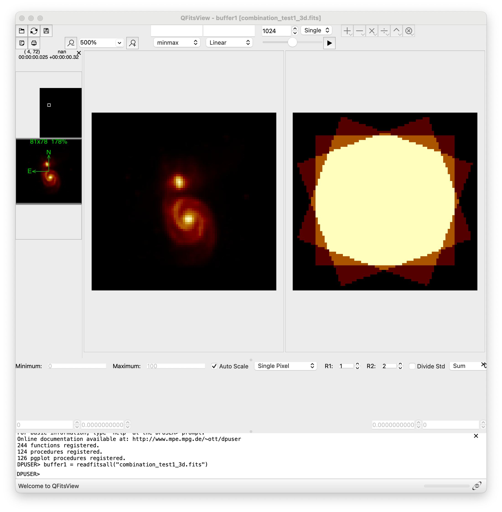
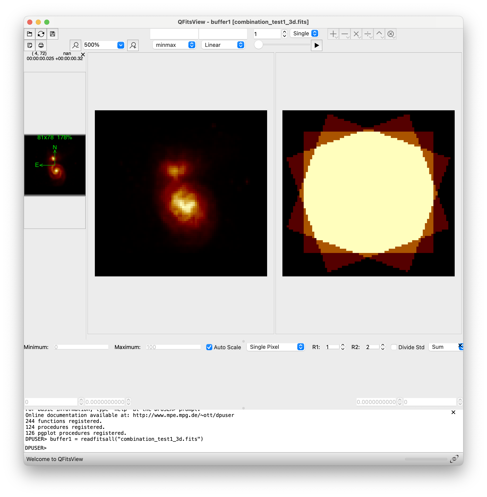
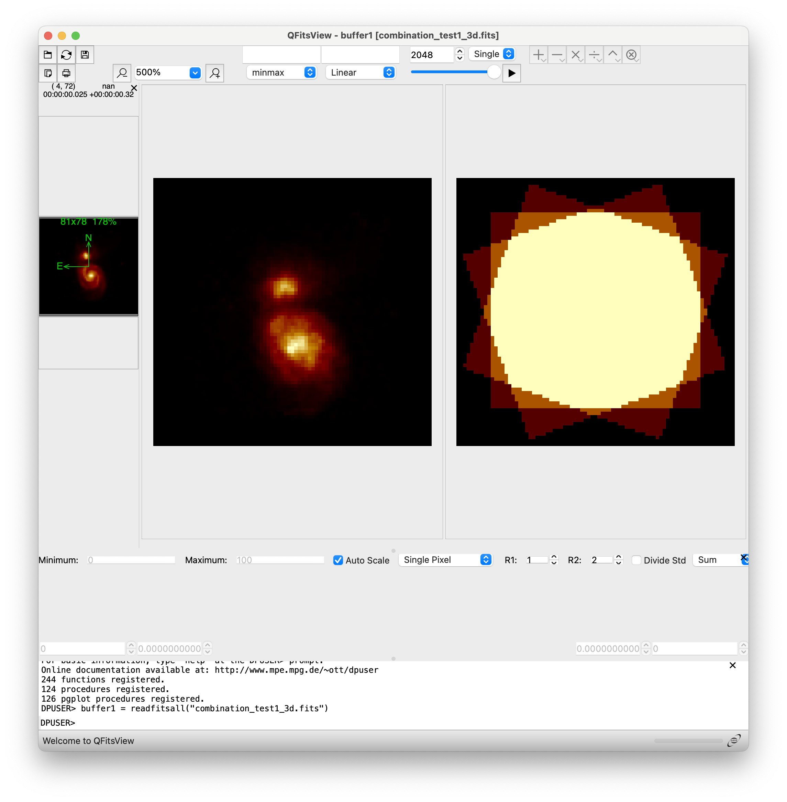

Generation of data cube mosaics
The code described below for mosaic generation relies on the use of the reproject package, which implements image reprojection methods for astronomical images.
The image combination assumes that the individual exposures to be combined are provided in flux units (e.g., ADU/s or something proportional).
In this section, we’ll use auxiliary images that we’ll generate beforehand with
the help of fridadrp-ifu_simulator.
Warning
Please note that the code shown below is under development and may undergo modifications.
Combination of 2D images
Before tackling the combination of 3D data cubes, let’s see how the numina package facilitates the combination of 2D FITS images.
Generation of individual exposures
For this example we are using the files scene_m51_2d.yaml and m51_dss1.fits.
Execute fridadrp-ifu_simulator to generate the images to be combined:
(venv_frida) $ fridadrp-ifu_simulator \
--scene scene_m51_2d.yaml \
--grating medium-K \
--scale coarse \
--delta_ra_teles_arcsec 0.0 \
--delta_dec_teles_arcsec 0.0 \
--instrument_pa_deg 0.0 \
--flatpix2pix none \
--stop_after_ifu_3D_method0 \
--prefix_intermediate_FITS test0a \
--seed 1234
(venv_frida) $ fridadrp-ifu_simulator \
--scene scene_m51_2d.yaml \
--grating medium-K \
--scale fine \
--delta_ra_teles_arcsec -0.1 \
--delta_dec_teles_arcsec -0.2 \
--instrument_pa_deg 40.0 \
--flatpix2pix none \
--stop_after_ifu_3D_method0 \
--prefix_intermediate_FITS test0b \
--seed 2345
(venv_frida) $ fridadrp-ifu_simulator \
--scene scene_m51_2d.yaml \
--grating medium-K \
--scale fine \
--delta_ra_teles_arcsec 0.2 \
--delta_dec_teles_arcsec 0.2 \
--instrument_pa_deg 20.0 \
--flatpix2pix none \
--stop_after_ifu_3D_method0 \
--prefix_intermediate_FITS test0c \
--seed 3456
We have used the parameter --stop_after_ifu_3D_method0 because we do not need
to execute all the steps of the simulator to generate the images we will need
in this case. Note that the first execution uses --scale coarse, while the
next two use --scale fine. Additionally, the values of
--delta_ra_teles_arcsec, --delta_dec_teles_arcsec, and
--instrument_pa_deg are different. However, since the airmass value is not
specified, it is assumed to be 1.0 in the three cases.
The files test0?_ifu_white2D_method0_os1.fits (with ? equal to a, b or c)
can be examined with any visualization tool. The numina package provides
the auxiliary script numina-ximshow for this purpose
(venv_frida) $ numina-ximshow \
test0?_ifu_white2D_method0_os1.fits \
--cmap viridis \
--cbar_orientation vertical \
--aspect equal \
--z1z2 minmax
{kind=link}
{kind=link}
{kind=link}
Note that it is also possible to visualize the collapsed view of the
corresponding 3D data cubes, using in this case the numina script
numina-extract_2d_slice_from_3d_cube (if no parameters are specified, it is
assumed that the collapse is performed along NAXIS3 and all pixels in that
direction are summed):
(venv_frida) $ numina-extract_2d_slice_from_3d_cube test0a_ifu_3D_method0.fits
(venv_frida) $ numina-extract_2d_slice_from_3d_cube test0b_ifu_3D_method0.fits
(venv_frida) $ numina-extract_2d_slice_from_3d_cube test0c_ifu_3D_method0.fits
{kind=link}
{kind=link}
{kind=link}
Combination of individual exposures
The combination of the images is carried out using the numina script
numina-generate_mosaic_of_2d_images, which takes as input an ASCII file
containing the list of 2D FITS images to be combined, and the name of the
output file.
The first step is then to generate an auxiliary text file with the names of the 2D FITS images to be combined.
(venv_frida) $ ls test0?_ifu_white2D_method0_os1.fits > list0_2d_images.txt
(venv_frida) $ cat list0_2d_images.txt
To combine the 3 selected images, we only need to execute the numina
script numina-generate_mosaic_of_2d_images:
(venv_frida) $ numina-generate_mosaic_of_2d_images \
list0_2d_images.txt \
combination_test0_2d.fits \
--verbose
Next, we compare the result of the combination of the 3 simulated exposures with the first exposure alone: both cover the field of the coarse camera. The improvement in spatial resolution in the combined image is noticeable after including the two pointings made with the fine camera. Note that the combined image has the sampling corresponding to the fine camera. Hence, the number of counts shows such a different value in both images.
(venv_frida) $ numina-ximshow \
combination_test0_2d.fits test0a_ifu_white2D_method0_os1.fits \
--cmap viridis \
--cbar_orientation vertical \
--aspect equal \
--z1z2 minmax
{kind=link}

The following figure shows the result of combining the two exposures obtained
with the ‘fine’ camera, represented on top of the first exposure calculated
with an oversampling of 10 (file testa_ifu_white2D_method0_os10.fits).
{kind=link}
Combination of 3D data cubes: example 1
We can start by combining the three 3D cubes generated in the previous section. Let us recall that in this case, the three cubes cover different solid angles on the celestial sphere but span the same wavelength range. Likewise, we do not have issues with differential atmospheric refraction within each data cube because we have assumed an airmass of 1.0.
The combination of the images is carried out using the numina script
numina-generate_mosaic_of_3d_cubes, which takes as input an ASCII file
containing the list of 3D FITS images to be combined, and the name of the
output file.
(venv_frida) $ ls test0?_ifu_3D_method0.fits > list0_3d_cubes.txt
(venv_frida) $ cat list0_3d_cubes.txt
(venv_frida) $ numina-generate_mosaic_of_3d_cubes \
list0_3d_cubes.txt \
all0_3d.fits \
--reproject_method adaptive \
--footprint \
--verbose
We can visualize the result using ds9:
(venv_frida) $ ds9 \
-scale mode minmax \
-geometry 1000x1000 \
-wcs degrees \
-multiframe \
test0a_ifu_3D_method0.fits \
test0b_ifu_3D_method0.fits \
test0c_ifu_3D_method0.fits \
all0_3d.fits \
-lock slice image \
-lock frame image \
-zoom to fit \
-cmap viridis \
-match frame colorbar \
-match frame wcs \
-colorbar lock yes \
-view multi yes
{kind=link}
In the first row, the three individual exposures are shown. In the bottom row, the image on the left corresponds to the combination of the three individual exposures, while the image in the center is the footprint of that combination.
Combination of 3D data cubes: example 2
In this case, we will introduce the effect of differential atmospheric refraction, using exposures of the same region of the sky but with different airmasses and position angles.
Generation of individual exposures
For this example we are using the file scene_m51_3d.yaml.
Execute fridadrp-ifu_simulator:
(venv_frida) $ fridadrp-ifu_simulator \
--scene scene_m51_3d.yaml \
--grating medium-K \
--scale fine \
--airmass 1.0 \
--parallactic_angle_deg 0 \
--instrument_pa_deg 0 \
--stop_after_ifu_3D_method0 \
--prefix_intermediate_FITS test1a \
--seed 1234
(venv_frida) $ fridadrp-ifu_simulator \
--scene scene_m51_3d.yaml \
--grating medium-K \
--scale fine \
--airmass 3.0 \
--parallactic_angle_deg 45 \
--instrument_pa_deg 20 \
--stop_after_ifu_3D_method0 \
--prefix_intermediate_FITS test1b \
--seed 2345
(venv_frida) $ fridadrp-ifu_simulator \
--scene scene_m51_3d.yaml \
--grating medium-K \
--scale fine \
--airmass 3.0 \
--parallactic_angle_deg -45 \
--instrument_pa_deg 340 \
--stop_after_ifu_3D_method0 \
--prefix_intermediate_FITS test1c \
--seed 3456
We have used again the parameter --stop_after_ifu_3D_method0 because we do
not need to execute all the steps of the simulator to generate the images we
will need in this example. In all cases, we are using the fine camera. In
the first exposure, the airmass is 1.0. In the next two exposures we have
chosen a high airmass to exaggerate the effect of atmospheric refraction,
modifying both the value of the parallactic angle and the instrument.
Examining the individual data cubes before combining them
We can quickly visualize the result with the help of the ds9 program.
(venv_frida) $ ds9 \
-scale mode minmax \
-geometry 1000x1000 \
-wcs degrees \
-multiframe \
test1a_ifu_3D_method0.fits \
test1b_ifu_3D_method0.fits \
test1c_ifu_3D_method0.fits \
-lock slice image \
-lock frame image \
-zoom to fit \
-cmap viridis \
-match frame colorbar \
-colorbar lock yes \
-view multi yes
{kind=link}
It is also possible to use qfitsview to visualize simultaneously the
individual exposures. In this case, with the idea of being able to change the
slice in the spectral direction simultaneously in the three exposures, we will
first generate an auxiliary image that performs a stack of the HDUs (header and
data units) from different FITS files into a single FITS file. For that
purpose, we can employ the numina script numina-stack_hdus.
(venv_frida) $ fitsinfo test1*3D*.fits
(venv_frida) $ ls test1*3D*.fits > list1_3d_cubes.txt
(venv_frida) $ cat list1_3d_cubes.txt
(venv_frida) $ numina-stack_hdus list1_3d_cubes.txt stack1_3d.fits
(venv_frida) $ qfitsview stack1_3d.fits
After executing the last command, select ‘Read All’ when qfitsview asks for
the extension to read.
{kind=link}
If we collapse the data cubes along the spectral direction (NAXIS3), the effect of atmospheric refraction is clearly noticeable.
(venv_frida) $ numina-extract_2d_slice_from_3d_cube test1a_ifu_3D_method0.fits
(venv_frida) $ numina-extract_2d_slice_from_3d_cube test1b_ifu_3D_method0.fits
(venv_frida) $ numina-extract_2d_slice_from_3d_cube test1c_ifu_3D_method0.fits
{kind=link}
{kind=link}
{kind=link}
Combination of individual data cubes
If we combine the previous 3 data cubes ignoring the problem of atmospheric refraction, the result is not satisfactory.
(venv_frida) $ numina-generate_mosaic_of_3d_cubes \
list1_3d_cubes.txt \
combination_test1_3d.fits \
--footprint \
--verbose
(venv_frida) $ fitsinfo combination_test1_3d.fits
(venv_frida) $ qfitsview combination_test1_3d.fits
The initial spatial cut shown by qfitsview corresponds to pixel 1024 along NAXIS3. The corresponding image looks apparently normal.
{kind=link}
However, when we display the cut corresponding to pixel 1 or pixel 2048, the result is clearly not satisfactory.
 {kind=link}
{kind=link}
Differencial atmospheric refraction correction
It is advisable to correct the individual exposures for differential atmospheric refraction (taking as reference the position of the image at the central wavelength along NAXIS3). To do this, we will start by using an auxiliary script that helps us visualize how significant the effect is in the images we are working with.
(venv_frida) $ numina-compute_adr_wavelength \
--airmass 3 \
--reference_wave_vacuum 1.7 \
--wave_ini 1.0 \
--wave_end 2.5 \
--wave_step 0.1 \
--wave_unit micron \
--plots
{kind=link}
When correcting each individual exposure, we will first insert an extension with a binary table that stores the effect of atmospheric refraction into each FITS file.
(venv_frida) $ fitsheader -k airmass test1?_ifu_3D_method0.fits -f
Only the second and third images need to be corrected. The first one was obtained with an airmass of 1.0.
(venv_frida) $ numina-include_adrtheor_in_3d_cube \
test1b_ifu_3D_method0.fits \
--verbose --plots
{kind=link}
(venv_frida) $ numina-include_adrtheor_in_3d_cube \
test1c_ifu_3D_method0.fits \
--verbose --plots
{kind=link}
Important: the previous step stores the correction to be applied but does not apply it to the data. To perform this process, we need to use an additional script.
We see that a new extension ADRTHEOR has appeared in each data cube.
(venv_frida) $ fitsinfo test1*3D*.fits
We can also empirically measure atmospheric refraction in each data cube using cross-correlation.
(venv_frida) $ numina-measure_slice_xy_offsets_in_3d_cube \
test1b_ifu_3D_method0.fits \
100 \
--iterate \
--extname adrcross \
--verbose --iterate --plots
(venv_frida) $ numina-measure_slice_xy_offsets_in_3d_cube \
test1c_ifu_3D_method0.fits \
100 \
--iterate \
--extname adrcross \
--verbose --iterate --plots
The previous procedure has added a new extension ADRCROSS to each of the
corrected images.
(venv_frida) $ fitsinfo test1*3D*.fits
We can easily compare the expected atmospheric refraction with that calculated using the cross-correlation technique.
(venv_frida) $ numina-compare_adr_extensions_in_3d_cube \
test1b_ifu_3D_method0.fits \
adrcross adrtheor
{kind=link}
At this point, we can correct the exposures for atmospheric refraction using
the preferred extension (in this case, ADRCROSS or ADRTHEOR).
(venv_frida) $ numina-adr_correction_from_extension_in_3d_cube \
test1b_ifu_3D_method0.fits \
--extname_adr adrtheor \
--extname_mask None \
--output test1b_ifu_3D_method0_corrected_ADRTHEOR.fits \
--verbose
(venv_frida) $ numina-adr_correction_from_extension_in_3d_cube \
test1c_ifu_3D_method0.fits \
--extname_adr adrtheor \
--extname_mask None \
--output test1c_ifu_3D_method0_corrected_ADRTHEOR.fits \
--verbose
Next, we add the 3 cubes (the first one uncorrected and the second and third cubes corrected).
(venv_frida) $ ls test1a_ifu_3D_method0.fits \
test1*_ADRTHEOR.fits > list1_3d_images_ADRTHEOR.txt
(venv_frida) $ cat list1_3d_images_ADRTHEOR.txt
(venv_frida) $ numina-generate_mosaic_of_3d_cubes \
list1_3d_images_ADRTHEOR.txt \
combination_test1_3d_ADRTHEOR.fits \
--verbose
(venv_frida) $ ds9 \
-scale mode minmax \
-geometry 1000x1000 \
-wcs degrees \
-multiframe \
test1a_ifu_3D_method0.fits \
test1b_ifu_3D_method0_corrected_ADRTHEOR.fits \
test1c_ifu_3D_method0_corrected_ADRTHEOR.fits \
combination_test1_3d_ADRTHEOR.fits \
-lock slice image \
-lock frame image \
-zoom to fit \
-cmap viridis \
-match frame colorbar \
-match frame wcs \
-colorbar lock yes \
-view multi yes
{kind=link}
In the upper image, from top to bottom and left to right, we have the cubes
corresponding to: the first exposure, the second exposure corrected using
ADRTHEOR, the mask of the previous cube, the third exposure corrected using
ADRTHEOR, the mask of the previous cube, the combination of the 3 cubes, and
the footprint of that combination. It is very interesting to move along the
wavelength using the slider that ds9 provides in an auxiliary window.
Finally, we can compare the effect of correcting or not correcting for atmospheric refraction.
(venv_frida) $ ds9 \
-scale mode minmax \
-geometry 1000x1000 \
-wcs degrees \
-multiframe \
combination_test1_3d.fits \
combination_test1_3d_ADRTHEOR.fits \
-lock slice image \
-lock frame image \
-zoom to fit \
-cmap viridis \
-match frame colorbar \
-match frame wcs \
-colorbar lock yes \
-view multi yes
{kind=link}
The top row shows the combined cube and the associated footprint when the combination is carried out without taking into account the effect of differential atmospheric refraction, while the bottom row shows the result when this effect is taken into account. Once again, it is important to interact with the display by moving along the wavelength axis. This clearly reveals the need to apply the correction.
ToDo: add the option to correct for atmospheric refraction by generating a corrected cube with a predefined celestial WCS with an arbitrary size. In this way, instead of interpolating when correcting for atmospheric refraction and when combining cubes with different pointings, we would only perform a single interpolation at the time of atmospheric refraction correction.